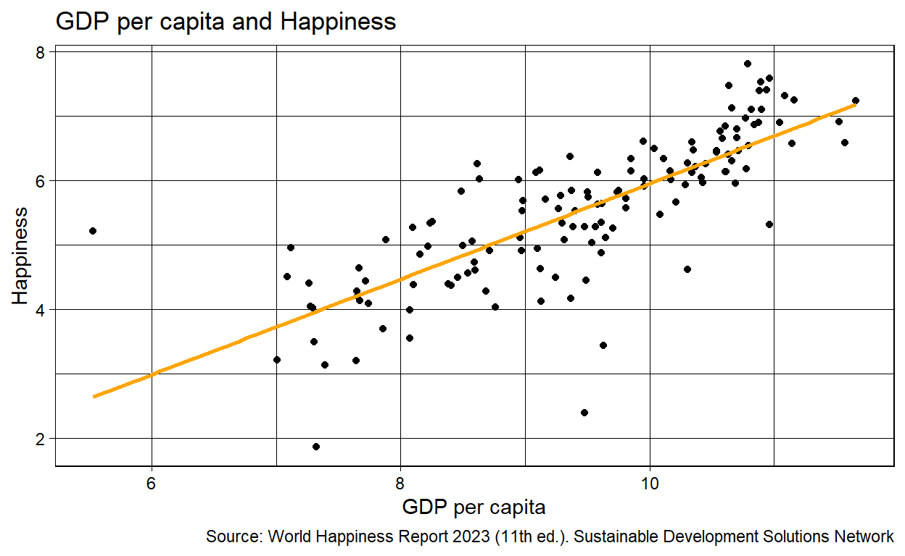
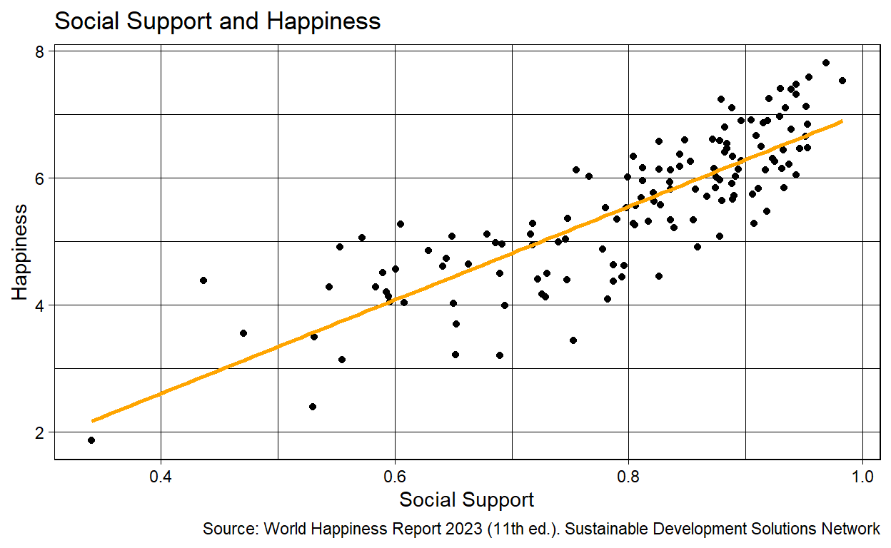

Research Question and Main Hypothesis
The following project aims to explore the universal strive towards happiness in a world that makes this endeavor seem nearly impossible. What particular factors of one’s life and state significantly impact one’s happiness? In particular, does one’s economic standing play a greater role in one’s happiness compared to more social factors, one’s relationships? This projects hopes to debunk the notion that “money makes you happy.” Thus, I hypothesize that indeed one’s relationships more significantly influence one’s happiness compared to that of one’s economic standing, money.
Certainly, one cannot control the happiness of another. However, governments still have an obligation to consider the happiness of its citizens. After all, it is governments who are in a position of power to pursue the necessary means to enact such state-wide change. Therefore, through identifying what exactly drives one’s happiness, governments can better formulate initiatives to ensure the achievement of happiness for its citizens, more specifically the accessibility of this universal right. This is to say that the following research question is important as it guides governments on how to address humanity’s greater strive towards happiness and universal right to achieving happiness.
Data Section
To answer this question of what factor influences one’s happiness the most, this research project will be using data from the World Happiness Report for the year of 2023. This report stems from the Sustainable Development Solutions Network, which is driven by the Gallup World Poll data. More importantly, the following organization similarly aims to explore happiness with the goal of calling upon governments to consider their own roles in the happiness of its citizens. The data of the report was collected through evaluations made by respondents regarding their own perception of their happiness on the “Cantril ladder.” In the context of this source and thus this report, happiness is defined as one’s “life evaluation.” The following scale asked respondents to think of a ladder with 10 representing one’s “best possible life” and 0 representing the worst. They ultimately rated their own lives on that scale. This information was then observed on six variables (social support, healthy life expectancy, freedom, generosity, corruption, and GDP per capita). Therefore, the happiness rankings that are earned by countries are not based on these factors, but rather the individual assessments of respondents on their lives (i.e. their answer to the Cantril ladder evaluation). (https://worldhappiness.report/about/)
The Gallup World Poll data, the main source of the World Happiness Report, is a survey based data collecting tool. According to the Gallup agency, this poll is conducted through a combination of telephone surveying along with in-person interviewing. For countries that have telephone coverage for at least 80% of the population, telephone surveys are leveraged. Additionally, where telephone interviewing is employed, a random-digit-dial is used. In countries that do not have the above telephone coverage, households are randomly selected for in-person interviewing. Therefore, the RESEARCH DESIGN of this data is a randomized experiment. (https://www.gallup.com/178667/gallup-world-poll-work.aspx)
The above research question can be simplified to exploring the influence of GDP per capita and one’s relationships (social support) on one’s happiness. Therefore, the main outcome of interest is happiness score, our dependent variable. The independent variables in this case, are a country’s GDP per capita and its score of social support.
##Dataset Cleaning and Main Outcome of Interestlibrary(tidyverse)
library(dplyr)
library(kableExtra)
Data1 <- read_csv("WHR2023.csv")
colnames(Data1) [1] "Country name"
[2] "Ladder score"
[3] "Standard error of ladder score"
[4] "upperwhisker"
[5] "lowerwhisker"
[6] "Logged GDP per capita"
[7] "Social support"
[8] "Healthy life expectancy"
[9] "Freedom to make life choices"
[10] "Generosity"
[11] "Perceptions of corruption"
[12] "Ladder score in Dystopia"
[13] "Explained by: Log GDP per capita"
[14] "Explained by: Social support"
[15] "Explained by: Healthy life expectancy"
[16] "Explained by: Freedom to make life choices"
[17] "Explained by: Generosity"
[18] "Explained by: Perceptions of corruption"
[19] "Dystopia + residual" WHDF2023 <- Data1 |>
select(-c(`Ladder score in Dystopia`:`Dystopia + residual`)) |>
select(-c(`Standard error of ladder score`: `lowerwhisker`)) |>
select(-c(`Healthy life expectancy`:`Perceptions of corruption`)) |>
rename(country = `Country name`,
happiness_score = `Ladder score`,
GDP_per_capita =`Logged GDP per capita`,
social_support = `Social support`) |>
arrange(desc(happiness_score))
WHDF2023# A tibble: 137 × 4
country happiness_score GDP_per_capita social_support
<chr> <dbl> <dbl> <dbl>
1 Finland 7.80 10.8 0.969
2 Denmark 7.59 11.0 0.954
3 Iceland 7.53 10.9 0.983
4 Israel 7.47 10.6 0.943
5 Netherlands 7.40 10.9 0.93
6 Sweden 7.40 10.9 0.939
7 Norway 7.32 11.1 0.943
8 Switzerland 7.24 11.2 0.92
9 Luxembourg 7.23 11.7 0.879
10 New Zealand 7.12 10.7 0.952
# ℹ 127 more rowsWHDF2023 |>
kbl(caption = "World Happiness Data 2023", col.names = c("Country", "Happiness Score", "GDP per capita", "Social Support")) |>
kable_classic(full_width = F, html_font = "Cambria")| Country | Happiness Score | GDP per capita | Social Support |
|---|---|---|---|
| Finland | 7.804 | 10.792 | 0.969 |
| Denmark | 7.586 | 10.962 | 0.954 |
| Iceland | 7.530 | 10.896 | 0.983 |
| Israel | 7.473 | 10.639 | 0.943 |
| Netherlands | 7.403 | 10.942 | 0.930 |
| Sweden | 7.395 | 10.883 | 0.939 |
| Norway | 7.315 | 11.088 | 0.943 |
| Switzerland | 7.240 | 11.164 | 0.920 |
| Luxembourg | 7.228 | 11.660 | 0.879 |
| New Zealand | 7.123 | 10.662 | 0.952 |
| Austria | 7.097 | 10.899 | 0.888 |
| Australia | 7.095 | 10.821 | 0.934 |
| Canada | 6.961 | 10.773 | 0.929 |
| Ireland | 6.911 | 11.527 | 0.905 |
| United States | 6.894 | 11.048 | 0.919 |
| Germany | 6.892 | 10.879 | 0.896 |
| Belgium | 6.859 | 10.844 | 0.915 |
| Czechia | 6.845 | 10.611 | 0.953 |
| United Kingdom | 6.796 | 10.704 | 0.882 |
| Lithuania | 6.763 | 10.568 | 0.939 |
| France | 6.661 | 10.701 | 0.909 |
| Slovenia | 6.650 | 10.588 | 0.951 |
| Costa Rica | 6.609 | 9.952 | 0.872 |
| Romania | 6.589 | 10.339 | 0.848 |
| Singapore | 6.587 | 11.571 | 0.878 |
| United Arab Emirates | 6.571 | 11.145 | 0.826 |
| Taiwan Province of China | 6.535 | 10.797 | 0.884 |
| Uruguay | 6.494 | 10.037 | 0.913 |
| Slovakia | 6.469 | 10.353 | 0.953 |
| Saudi Arabia | 6.463 | 10.715 | 0.884 |
| Estonia | 6.455 | 10.541 | 0.946 |
| Spain | 6.436 | 10.540 | 0.932 |
| Italy | 6.405 | 10.634 | 0.882 |
| Kosovo | 6.368 | 9.359 | 0.844 |
| Chile | 6.334 | 10.114 | 0.889 |
| Mexico | 6.330 | 9.850 | 0.804 |
| Malta | 6.300 | 10.661 | 0.923 |
| Panama | 6.265 | 10.305 | 0.896 |
| Poland | 6.260 | 10.453 | 0.925 |
| Nicaragua | 6.259 | 8.618 | 0.853 |
| Latvia | 6.213 | 10.370 | 0.937 |
| Bahrain | 6.173 | 10.776 | 0.844 |
| Guatemala | 6.150 | 9.116 | 0.812 |
| Kazakhstan | 6.144 | 10.166 | 0.931 |
| Serbia | 6.144 | 9.854 | 0.873 |
| Cyprus | 6.130 | 10.611 | 0.826 |
| Japan | 6.129 | 10.616 | 0.894 |
| Croatia | 6.125 | 10.341 | 0.917 |
| Brazil | 6.125 | 9.582 | 0.836 |
| El Salvador | 6.122 | 9.089 | 0.755 |
| Hungary | 6.041 | 10.419 | 0.943 |
| Argentina | 6.024 | 9.959 | 0.891 |
| Honduras | 6.023 | 8.635 | 0.766 |
| Uzbekistan | 6.014 | 8.948 | 0.875 |
| Malaysia | 6.012 | 10.169 | 0.799 |
| Portugal | 5.968 | 10.429 | 0.878 |
| South Korea | 5.951 | 10.693 | 0.812 |
| Greece | 5.931 | 10.288 | 0.835 |
| Mauritius | 5.902 | 9.957 | 0.888 |
| Thailand | 5.843 | 9.751 | 0.874 |
| Mongolia | 5.840 | 9.372 | 0.933 |
| Kyrgyzstan | 5.825 | 8.486 | 0.911 |
| Moldova | 5.819 | 9.499 | 0.857 |
| China | 5.818 | 9.738 | 0.836 |
| Vietnam | 5.763 | 9.287 | 0.821 |
| Paraguay | 5.738 | 9.510 | 0.906 |
| Montenegro | 5.722 | 9.813 | 0.890 |
| Jamaica | 5.703 | 9.165 | 0.867 |
| Bolivia | 5.684 | 8.985 | 0.811 |
| Russia | 5.661 | 10.210 | 0.889 |
| Bosnia and Herzegovina | 5.633 | 9.616 | 0.880 |
| Colombia | 5.630 | 9.584 | 0.822 |
| Dominican Republic | 5.569 | 9.811 | 0.827 |
| Ecuador | 5.559 | 9.270 | 0.806 |
| Peru | 5.526 | 9.402 | 0.798 |
| Philippines | 5.523 | 8.979 | 0.780 |
| Bulgaria | 5.466 | 10.087 | 0.918 |
| Nepal | 5.360 | 8.256 | 0.748 |
| Armenia | 5.342 | 9.615 | 0.790 |
| Tajikistan | 5.330 | 8.237 | 0.836 |
| Algeria | 5.329 | 9.300 | 0.855 |
| Hong Kong S.A.R. of China | 5.308 | 10.966 | 0.817 |
| Albania | 5.277 | 9.567 | 0.718 |
| Indonesia | 5.277 | 9.385 | 0.804 |
| South Africa | 5.275 | 9.478 | 0.907 |
| Congo (Brazzaville) | 5.267 | 8.095 | 0.605 |
| North Macedonia | 5.254 | 9.703 | 0.805 |
| Venezuela | 5.211 | 5.527 | 0.839 |
| Laos | 5.111 | 8.962 | 0.679 |
| Georgia | 5.109 | 9.646 | 0.716 |
| Guinea | 5.072 | 7.880 | 0.649 |
| Ukraine | 5.071 | 9.314 | 0.878 |
| Ivory Coast | 5.053 | 8.576 | 0.572 |
| Gabon | 5.035 | 9.537 | 0.746 |
| Nigeria | 4.981 | 8.496 | 0.740 |
| Cameroon | 4.973 | 8.217 | 0.686 |
| Mozambique | 4.954 | 7.116 | 0.692 |
| Iraq | 4.941 | 9.098 | 0.718 |
| State of Palestine | 4.908 | 8.716 | 0.859 |
| Morocco | 4.903 | 8.973 | 0.553 |
| Iran | 4.876 | 9.610 | 0.778 |
| Senegal | 4.855 | 8.155 | 0.629 |
| Mauritania | 4.724 | 8.591 | 0.644 |
| Burkina Faso | 4.638 | 7.667 | 0.663 |
| Namibia | 4.631 | 9.121 | 0.787 |
| Turkiye | 4.614 | 10.307 | 0.796 |
| Ghana | 4.605 | 8.596 | 0.641 |
| Pakistan | 4.555 | 8.540 | 0.601 |
| Niger | 4.501 | 7.091 | 0.590 |
| Tunisia | 4.497 | 9.244 | 0.730 |
| Kenya | 4.487 | 8.458 | 0.690 |
| Sri Lanka | 4.442 | 9.491 | 0.826 |
| Uganda | 4.432 | 7.716 | 0.794 |
| Chad | 4.397 | 7.261 | 0.722 |
| Cambodia | 4.393 | 8.385 | 0.747 |
| Benin | 4.374 | 8.103 | 0.437 |
| Myanmar | 4.372 | 8.404 | 0.787 |
| Bangladesh | 4.282 | 8.685 | 0.544 |
| Gambia | 4.279 | 7.648 | 0.584 |
| Mali | 4.198 | 7.655 | 0.593 |
| Egypt | 4.170 | 9.367 | 0.726 |
| Togo | 4.137 | 7.673 | 0.595 |
| Jordan | 4.120 | 9.130 | 0.729 |
| Ethiopia | 4.091 | 7.739 | 0.782 |
| Liberia | 4.042 | 7.277 | 0.596 |
| India | 4.036 | 8.759 | 0.608 |
| Madagascar | 4.019 | 7.290 | 0.650 |
| Zambia | 3.982 | 8.074 | 0.694 |
| Tanzania | 3.694 | 7.857 | 0.653 |
| Comoros | 3.545 | 8.075 | 0.471 |
| Malawi | 3.495 | 7.302 | 0.531 |
| Botswana | 3.435 | 9.629 | 0.753 |
| Congo (Kinshasa) | 3.207 | 7.007 | 0.652 |
| Zimbabwe | 3.204 | 7.641 | 0.690 |
| Sierra Leone | 3.138 | 7.394 | 0.555 |
| Lebanon | 2.392 | 9.478 | 0.530 |
| Afghanistan | 1.859 | 7.324 | 0.341 |
library(rworldmap)
library(RColorBrewer)
d <- data.frame(
country=WHDF2023$country,
value=WHDF2023$happiness_score)
cols <- colorRampPalette(brewer.pal(7,"YlOrRd"))(length(WHDF2023))
n <- invisible(joinCountryData2Map(d, joinCode="NAME", nameJoinColumn="country"))131 codes from your data successfully matched countries in the map
6 codes from your data failed to match with a country code in the map
112 codes from the map weren't represented in your datamapCountryData(n, nameColumnToPlot="value", mapTitle="Distribution of Happiness Globally",colourPalette=cols, oceanCol = "#88E2F2", addLegend = TRUE,aspect = 1.1, borderCol = "Black", lwd =.1) 
Here lies a distribution of happiness, our main outcome of interest, across the world. One
##Main Analaysis & Regression Output
To be able to compare the effect of GDP per capita and social support, it is essential that we first start by recognizing the relationship between happiness and both variables (i.e. GDP per capita and social support). Again, our main outcome of interest is a country’s happiness score. Thus, below lies two scatter plots that reveal how GDP per capita and social relationships influence a country’s happiness score, whether this is positive or negative.
plot1 <- ggplot(data = WHDF2023,
mapping = aes(x = GDP_per_capita,
y = happiness_score)) +
geom_point() +
geom_smooth(color = "orange") +
labs(title = "GDP per capita and Happiness", x = "GDP per capita", y = "Happiness") + theme_linedraw()
plot1
In this visualization we have GDP per capita as the independent variable and happiness score as the dependent variable. With each country represented by a scatter plot point, we can infer a positive relationship between GDP per capita and happiness score. Here, through the geom_smooth function, I have added a smoothed curve that summarized the relationship between these variables. This function uses a loess smoother to estimate the conditional means of the happiness score (y axis variable) as a function of the GDP per capita (x axis variable).
plot2 <- ggplot(data = WHDF2023,
mapping = aes(x = social_support,
y = happiness_score)) +
geom_point() +
geom_smooth(lm = loess, color = "orange") + labs(title = "Social Support and Happiness", x = "Social Support", y = "Happiness") +
theme_linedraw()
plot2
Use findings to reject the hypothesis that a change in GDP and social support do NOT change the score.
We reject the null hypothesis if p is greater than alpha value, which will be .05.
Below is a regression model of the data pertaining to GDP per capita and social support. Here, we are able to observe exactly how happiness is impacted depending on changes of the following variables.
library(broom)
fit <- lm(happiness_score ~ GDP_per_capita + social_support, data = WHDF2023)
summary(fit)
Call:
lm(formula = happiness_score ~ GDP_per_capita + social_support,
data = WHDF2023)
Residuals:
Min 1Q Median 3Q Max
-1.9392 -0.3102 0.0408 0.3729 1.1617
Coefficients:
Estimate Std. Error t value Pr(>|t|)
(Intercept) -1.71899 0.38275 -4.491 1.51e-05 ***
GDP_per_capita 0.34931 0.05938 5.883 3.05e-08 ***
social_support 4.95304 0.55474 8.929 2.90e-15 ***
---
Signif. codes: 0 '***' 0.001 '**' 0.01 '*' 0.05 '.' 0.1 ' ' 1
Residual standard error: 0.5641 on 134 degrees of freedom
Multiple R-squared: 0.7588, Adjusted R-squared: 0.7552
F-statistic: 210.7 on 2 and 134 DF, p-value: < 2.2e-16tidy_fit <- tidy(fit)
tidy_fit# A tibble: 3 × 5
term estimate std.error statistic p.value
<chr> <dbl> <dbl> <dbl> <dbl>
1 (Intercept) -1.72 0.383 -4.49 1.51e- 5
2 GDP_per_capita 0.349 0.0594 5.88 3.05e- 8
3 social_support 4.95 0.555 8.93 2.90e-15tidy_fit_regression <- tidy_fit |> kbl(caption = "Main Regression", col.names = c("Term", "Estimate", "Standard Error", "Statistic", "P Value")) |>
kable_classic(html_font = "Cambria")
tidy_fit_regression| Term | Estimate | Standard Error | Statistic | P Value |
|---|---|---|---|---|
| (Intercept) | -1.7189883 | 0.3827506 | -4.491144 | 1.51e-05 |
| GDP_per_capita | 0.3493135 | 0.0593762 | 5.883055 | 0.00e+00 |
| social_support | 4.9530424 | 0.5547425 | 8.928544 | 0.00e+00 |
var_labels <- c(
"(Intercept)" = "Intercept",
"GDP_per_capita" = "GDP per capita",
"social_support" = "Social Support")
modelsummary::modelsummary(fit, statistic = "p.value",
gof_map = c("nobs",
"r.squared","adj.r.squared"),
coef_map = var_labels) |>
kable_classic(full_width = F, html_font = "Cambria")| (1) | |
|---|---|
| Intercept | −1.719 |
| (<0.001) | |
| GDP per capita | 0.349 |
| (<0.001) | |
| Social Support | 4.953 |
| (<0.001) | |
| Num.Obs. | 137 |
| R2 | 0.759 |
| R2 Adj. | 0.755 |